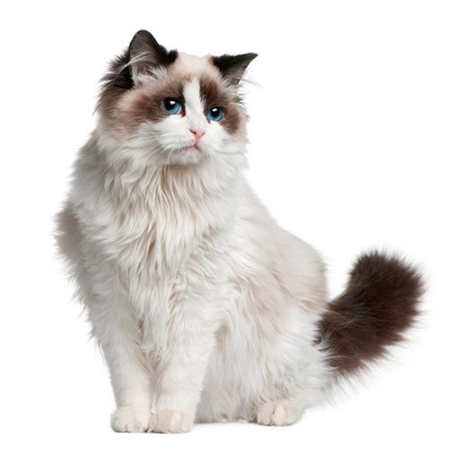

RAGDOLL
|

RAGDOLL |
| Wygląd | Pod względem wyglądu zewnętrznego koty rasy ragdoll są dość duże i umięśnione. Średnia masa ciała samic wynosi 4 – 6 kg, a samców od 6 do nawet 10 kg. Wzorcowo głowa ragdolla powinna być szeroka, średniej wielkości, osadzona na silnej i krótkiej szyi. Koty tej rasy mają lekko zaokrąglone czoła, wydatne policzki i wyraźnie zarysowane bródki. |
|---|---|
| Charakter | Z charakteru koty rasy ragdoll są spokojne, przyjazne, ciche i zazwyczaj mało ruchliwe. Uwielbiają pieszczoty, takie jak głaskanie i przytulanie. Chętnie dotrzymują towarzystwa swoim opiekunom w czasie codziennych czynności. |